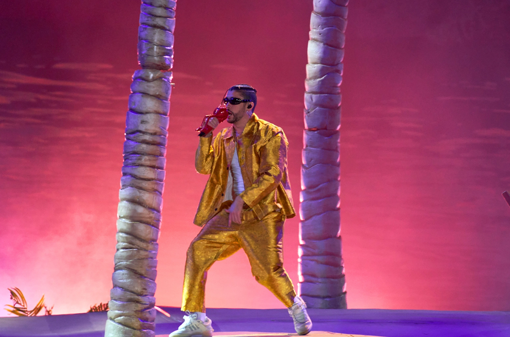

BAD BUNNY

Benito Antonio Martínez Ocasio (Almirante Sur, Vega Baja, 10 de marzo de 1994), conocido artísticamente como Bad Bunny, es un rapero, cantante, compositor y productor puertorriqueño.34 Su estilo de música es generalmente definido como trap latino y reguetón, pero también ha interpretado otros géneros como kizomba. Se caracteriza por su entonación grave, sin ninguna técnica vocal y su estilo de vestir. Empezó a ganar popularidad en SoundCloud y eventualmente, firmó un contrato con un sello discográfico mientras trabajaba como empaquetador en un supermercado y estudiaba en la Universidad de Puerto Rico en Arecibo. Después del éxito de su sencillo «Soy Peor» en 2016, alcanzó la fama tras colaborar con los artistas Cardi B y Drake en los sencillos «I Like It» y «Mia» que alcanzaron el primer y tercer puesto en la lista Billboard Hot 100 respectivamente. Su álbum de estudio debut X 100pre (2018) ganó el Grammy Latino por mejor álbum de música urbana y entró en la lista de los 500 mejores álbumes musicales de todos los tiempos, según la revista Rolling Stone, ocupando el lugar 447.5
Su álbum colaborativo con el cantante colombiano J Balvin, Oasis (2019), contiene los exitosos sencillos «Qué pretendes» y «La canción». Así como produjo el exitoso sencillo «Callaíta» con el productor Tainy después de la publicación de su álbum x100pre. A principios de 2020, cantó en el Espectáculo de medio tiempo del Super Bowl LIV junto a Shakira, y se convirtió en el primer artista latino urbano en ser la portada de la revista Rolling Stone. Durante el año, Bad Bunny lanzó su segundo álbum YHLQMDLG (Yo hago lo que me de la gana), un álbum sorpresa recopilatorio Las que no iban a salir, su tercer álbum de estudio El último tour del mundo, y Un verano sin ti Un verano sin ti, un éxito comercial y de crítica, debutó en la cima del Billboard 200 de Estados Unidos, marcando el segundo álbum número uno de Bad Bunny y el tercer álbum en español en encabezar la lista. Además, fue el primer artista latino en ser el más reproducido en Spotify durante el año 2022.6 En 2021 y 2022 fue parte de WWE7 y de las 100 personas más influyentes del mundo en la revista Time.8 En octubre del mismo año la publicación estadounidense Pitchfork lo incluyó en su lista de los 200 artistas más influyentes de los últimos 25 años.9 Hasta entonces, su fortuna estaba estimada en los cuarenta millones USD.10En 2023, la revista TIME en su primera edición en español, puso a Bad Bunny en su portada.11